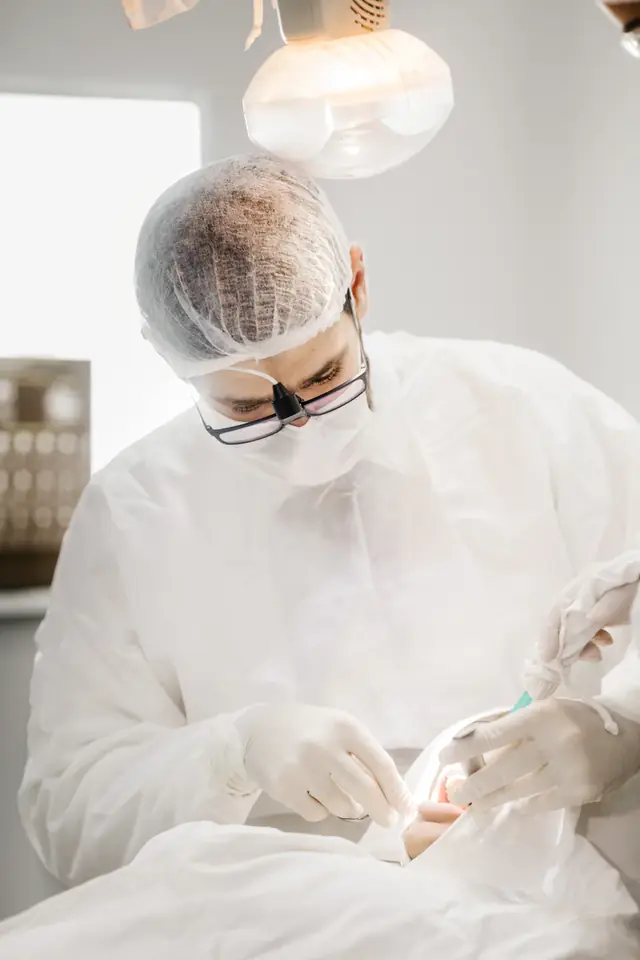

Root canal treatment or a filling
We find the cause first with a digital X-ray. A deep cavity usually needs a root canal, which we do under local anaesthesia. A shallow one needs only a tooth-coloured filling.
- Visits
- 1 to 2 for most root canals
- In the chair
- 45 to 90 minutes
- Often followed by
- A crown to protect the tooth